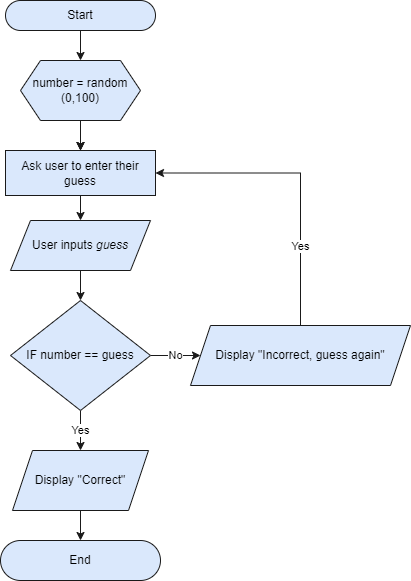
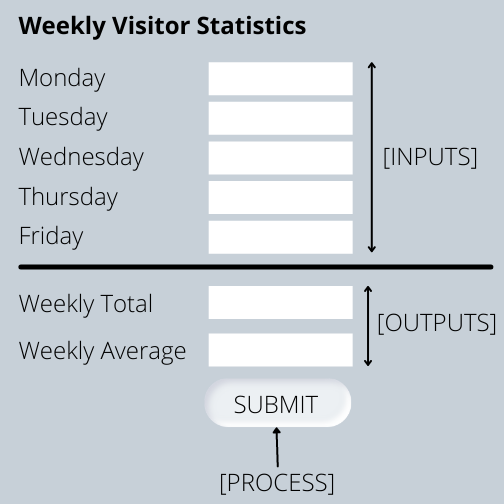
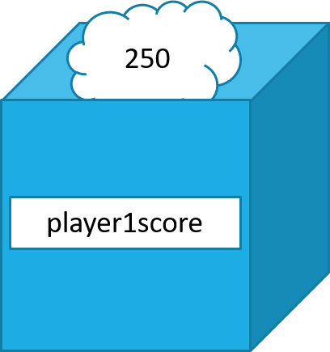
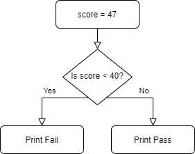
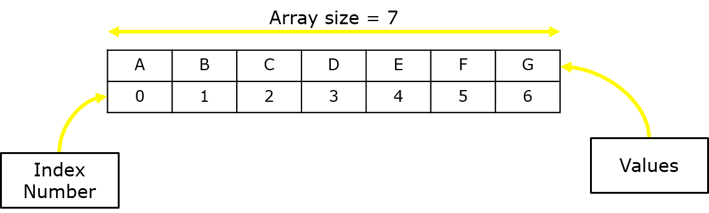

Intro to Python
Python is a high level programming language. The language is designed to be readable and is used across many large tech companies such as YouTube, Google, NASA etc.
You can download Python IDLE (Integrated Development and Learning Environment) from the official Python Website.
Other Python Resources:


Analysis
At National 5 level you will be expected to know the Development Methodology and the 6 stages within this development process:
- Analysis
- Design
- Implementation
- Testing
- Documentation
- Evaluation
This development methodoloy is an iterative process since stages of the methodoloy can be and will be revisited due to information gained at later stages.
At the analysis stage the programmer will look at what it is the program should do, and then decide what should be included in the program.
- What is the purpose of the program?
- What features should the program have in order to solve the problem? (These are considered the functional requirements) and is there a requirement for input validation?
- What is the range and type of data to be entered into the program? (Inputs)
- What processes will the program do with the entered data?
- What outputs must the program have?
Assumptions
The programmer must make assumptions in the analysis stage if there are aspects of the program that are not communicated or unclear. Assumptions will be dependant on the programs' specification.
Input Validation
Validating input is important as any program we make will require specific data or data types to be entered. If this validation isn't present, and our program accepts any data then it can, and most likely will, cause big problems for us further down the line.
Input Validation is where we check the data being entered is correct - if it isn't then we reject that data and ask for the correct data to be re-entered.
Design
The design stage is where the program is broken down into a plan of how the programmer or team will solve the problem. They will look at how the program sohuld flow, what inputs, proccesses and outputs should happen and at what particular stage.
Design Notation
The program that is to be written will be designed using one of three design notations;
- Structure Diagram
- Flowchart
- Pseudocode
Any one of the 3 design notations are expected in your practical assessment as well as your written assessment, but you will still be expected to be able to read and understand all 3.
Flowchart
Flowcharts detail the order of execution of instructions within a program. They are easy to follow, only have one possible path, a start and an end. They use shapes to determine the type of instruction and arrows to show the path of the flowchart.
| Symbol | Description |
|---|---|
| A process that doesn't fit into any of the below | |
| This is used to indicate the start and stop of a flowchart | |
| This is used to initialise a variable or array before we use it | |
| This is used to signify input and output in the program | |
| This is used when we want to give the program a decision to make. It has 2 possible paths to follow | |
| This is used to indicate where a pre-defined function is being used. | |
| This is used to show that the flowchart is to be continued on the next page, should you run out of space |
Here is an example of a flowchart for a number guessing game;
Pseudocode
Pseudocode is simply 'fake' code. It is code that cannot be executed, and is written in such a way that it is easy to understand. Think of it as a blend between real code and pure English.
randomNumber = generate number between 1 and 100
userGuess = input from keyboard
while userGuess does not equal randomNumber
display message asking to guess again
userGuess = input from keyboard
display well done messageThe above pseudocode written in Python:
number = random.randint(0,100)
print("Guess a number between 1 and 100")
guess = int(input("Guess a number:"))
while guess != number:
print("Try again")
guess = int(input("Guess a number:"))
else:
print("Well done, you guessed correct")
Structure Diagram
A structure diagram is very similar to a flowchart in that is uses symbols to denote certain parts of the program, but the layout is different and doesn't need to flow or have a path to follow like a flowchart does - instead think of it as a hierarchical diagram.
| Symbol | Description |
|---|---|
| A process that doesn't fit into any of the below | |
| This is used to display selection (IF statements) | This is used to indicate where a pre-defined function is being used. |
| This is used to indicate a loop. |
A structure diagram must be read top to bottom, and left to right. So the order of the processes is important. Let's look at an example;

Wireframe
Wireframes are used to show how the program will look in terms of its layout and features. However, since Python, at the level we learn, does not have a user interface for the programs we make. That being said, we still need to know how to design a user interface for a piece of software.
Consider this checklist when creating a wireframe:
- Areas where there will be user input
- Areas where there will be output
- Any buttons that are required
- Design information such as font, background colour etc)
You should label the wireframe with the elements where input, process and output are concerned.
Implementation
Variables
Variables are a way of storing information in the program. The value they hold is able to change throughout the programs run time. They are made up of two components;
- Name
- Value
The name of the variable is important - think of it like you are packing up your belongings to move house. In each box there will be items, usually of the same kind, so for example, we are packing away all of your shoes. The box will contain all of your shoes and you would write on the box "shoes" so that you know in that box there are all of your shoes.
The name must be descriptive of what is inside of the variable. If my variable is storing a players score, I would call my variable score, or player1score.
There are a few rules to take note of when deciding on a variable name;
- Be descriptive
- Start with a letter
- Can not contain spaces (player Score)
- Can not be a reserved word
So, to use the players score as a worked example, the variable would look something like this:
player1score = 250Data Types
Python supports lots of different data types, but the there are 4 data types that you will need to know about;
- Integer
- Float
- String
- Boolean
Integers
Integers are whole numbers. This could be 1, 4, 50, 1000 etc - they have no decimal after.player1score = 250We can perform calculations using Integers and Floats. We can add +, subtract -, multiply *, and divide / and more.
The main thing to remember is that when you want to perform a calculation on a variable we have to do something with the answer. Let's say we want to add 50 to our player1score variable to take its value to 300
player1score = 250
player1score + 50The above code will not work - we are adding 50 to the player1score, but the data stored in that variable is not being updated.
player1score = 250
player1score = player1score + 50
OR
player1score += 50We have to say player1score equals itself + 50.
Float
Since Integers can not have a decimal after, another data type is needed, this is where Float's come in. They can have a decimal value; 3.14, 100.1, 120.567 etcprice = 7.99String
A string is a way of storing text. The string data type allows use to store a string of characters, these characters can be any letter of the alphabet, a number, or a symbol. To store a string it must be enclosed by quotes - for example;myText = "Hello"Strings can be manipulated using a variety of functions built into Python. Here is a list.
Strings can be added, although not in the same sense as an integer or float can be added, but rather strings can be concatenated - which simply means to merge two things together.
text1 = "Hello"
text2 = "Friend"
text3 = text1 + text2
print(text3)The outcome of the code above would be;
>> HelloFriendBoolean
A boolean is a data type that only has two possible values; True or False.access = TruePython will automatically determine the datatype of the variable based on the data you assign it - if you create a variable x = 3, it will assume the data type is an integer, if you create a variable y = 0.4 then it will assume the data type is float.
Loops
Loops allow us to repeat code either a set number of times or an unknown number of times. Using loops is incredibly important for reducing the amount of code needed and therefore improves the efficiency of our code. There are two types of loops you will learn about; fixed and conditional.
Fixed Loop
First we will look at a For loop which is used for when we know how many times we want the code to loop for. Hence the name, fixed loop.
for i in range(1,6):
print("Hello")The print statement will run and print Hello 5 times.
>> Hello
>> Hello
>> Hello
>> Hello
>> HelloYou might be wondering, why does it say 1,6 but only prints 5? Well, the numbers you specify will have an impact on the number of loops, the first number will be the starting number, the second number is the ending number, but once the loop reaches 6, it will not execute a 6th time.
So an easy rule of thumb is to know your loop number, for example 10 and then add 1 to it. So, n+1 where n = number of iterations (loops)
Conditional Loop
There will be situations where you don't know the amount of times you need to loop code, this is where a while loop comes in use. We give the code a condition, and when that condition becomes false, the loop stops.
A while loop will repeat code while a condition is True.
For example;
num = 0
while num != 10:
print(num)
num = num + 1The outcome of this code would be;
>> 0
>> 1
>> 2
>> 3
>> 4
>> 5
>> 6
>> 7
>> 8
>> 9It will print 0 - 9, as once num has a value of 10, it will stop the loop.
Selection
Selection is where we give the computer a condition and it must work out if the condition is true or false, from this outcome we can tell the computer to do x or y.
Let's consider the scenario where a teacher is entering grades into the computer and it must decide whether the person has passed or failed.
If a students achieves 40% or more on their test, they pass. If they achieve less than 40% then they fail.
score = 67
if score > 40:
print("Fail")
else:
print("Pass")The outcome of the code above would be;
>> PassWe can visualise the decision the computer needs to make by using a flowchart - the computer has two paths that it can go down but can only go down one.
Sometimes there is a situation where there is more than one True or False situation. Consider the teacher entering grades secnario; we have grades A, B, C, D, E, F and then Fail. We can ask the computer to choose a grade based on the inputted percentage.
This is where an ELIF condition is used. We start off with an IF, and then if that condition is False, it will move onto the next condition. And then if that condition is False, it will move onto the next condition and so on.
score = 56
if score >=90:
print ("A Grade")
elif score >= 80:
print ("B Grade")
elif score >= 70:
print ("C Grade")
elif score >= 60:
print ("D Grade")
elif score >= 50:
print ("E Grade")
elif score >= 40:
print("F Grade")
else:
print("Fail")Arrays
In Python we can store multiple values under one variable name, this is called an array. They work by assigning each item in the array an index number, this allows use to choose specific pieces of data without selecting them all.
You can use multiple arrays in a single program to store different collections of data.
An array will always start at index 0. This means that the first item in the array is always at position 0.
To setup an array we start as we would with creating a variable; the name. Same rules apply for array naming as does the variable naming. Next, we need to assign ( = ) the data to the array. Then we use square brackets to tell Python that the following data is to be stored as an array. Each item is separated by a comma.
numbers = [1,2,3,4,5]
prices = [2.50, 11.99, 285.75]
names = ["John", "Sarah", "Steve"]Accessing the individual data inside the array is relatively straight forward. We call the array using its name and then using square brackets, give a index number of the value we wish to retrieve. For example, I want to print Thursday and Saturday from the array below, therefore I will choose 3 and 5 as my index values
days = ["Monday", "Tuesday", "Wednesday",
"Thursday", "Friday", "Saturday",
"Sunday"]
print(days[3])
print(days[5])The above code will output the following;
>> Thursday
>> SaturdayIt is therefore safe to assume that the last index position of an array is n-1, where n is the number of items it holds.
Input/Output
Input and Output is paramount in programming. A program becomes more useful when it has data input and output. Python has two built in functions (pre-made code) to deal with inputting and outputting data; input() and print()
Output
Let's start with the easier of the two; output. There are many situations where you would want to output data; printing a score, name, answer, question, instruction. But how do we do it?
print("Hello")This single line of code will output in the Shell the word Hello
>> HelloThe print() function will print anything that is put between the brackets. We can print strings, integers, floats, booleans, arrays, and even variables.
num = 55
print(num)Note, to print a variable, or its contents, we put the name of the variable inside the brackets - no quotes are needed because then it becomes a string.
>> 55Input
Now for the slightly more challenging of the two; Input.
Input is used for situations where we want the user to enter some information into our program. They might be asked to enter their name, age, a score, a price of an item, or any other data that we request. Whatever they enter, we must store this data in a variable. So the first step is to create a variable and name it according to the data to be entered.
For example, if we want the user to enter their name, we would create a variable called name or user_name. Again, it depends on the situation as to what you name your variable.
name = input ()
JohnWhen the above line of code is executed, the program will wait until the user has entered their name - now it is important to know that the user could actually enter anything they wish and the program (at this stage) does not know if that data they have entered is correct.
Once the user has entered their name, it will be stored in the variable name and we can use this data to print out a greeting;
print("Hello " + name)The outcome of this small program would be;
>> Hello JohnWe can take this a step further by doing an output and input with only one function.
name = input("What is your name?")As you can see from the code above, we have entered a string between the brackets for the input() function. In here we can give a message to the user explaining what data we want them to enter. The outcome from this could would be;
>> What is your name?And the program would wait until the user types in their name.
Standard Algorithms
In programming there are some universally agreed standards on how to program a particular algorithm; Standard Algorithms. They set out the standard practice of writing the code in order to solve a problem.
- Running Total
- Traversing 1-D Array
- Input Validation
Running Total
Some programs you will need to keep a running total. This could be a total count, or a total sum of all inputted values.
An example would be your program is to keep a running total of the number of daily visitors to a park for a week;
weeklyVisitors = 0
for i in range(0, 7):
dailyVisitors = int(input("Enter the number of visitors for day ", i+1))
weeklyVisitors = weeklyVisitors + dailyVisitors
This would output:
>> Enter the number of visitors for day 1In the code above, we have a couple of things happening;
- we set up a variable to store the weekly total visitors - this variable will constantly be updated with the new weekly total as we add each days values into the program.
- we begin a loop for the number of days in a week
- in this loop we get input from the user by asking them how many visitors to the park were observed in each day and store this value in dailyVisitors variable
- we then use the weeklyVisitors variable to set its new value to equal itself plus dailyVisitors variable
Line 3 is where we keep a running total of the weekly visitors as the content of the variable is constantly changed when the program is run.
Testing
It is important that you test your program for errors and bugs throughout the development process.
However, you will move onto a testing stage whereby you will be testing the code with a range of inputs to ensure that it works as expected. We will use test data and it can be split into 3 categories;
- Normal
- Extreme
- Exceptional
Normal test data is as the name suggests; normal. This is the data that should be entered into the program for it serve its purpose. Let's take an example of a prgram that asks the user for a test score as a percentage. We know that the only acceptable scores in percentage format for a test is 0 to 100. Therefore, 1-99 can be considered normal test data.
Extreme test data is quite simple; for the example above, it would be 0 and 100. Extreme test data is such data that sits on the boundary of acceptable and not acceptable data. 0 and 100 are still valid numbers that can be entered but they are the boundary of what is acceptable and not.
Therefore, Exceptional test data is any data that should not be accepted by the program. Keeping with the example above, we can say that any number that is not 0 to 100 is execeptional. So, numbers like -10 and 125 are not acceptable numbers for a percentage when it comes to a test score.
Errors
Errors will always happen in programming. They are inevitable. That's why it is important to understand the types of errors and therefore, how to go about fixing them.
Syntax Errors
Syntax errors are ones that break the rules of the language you are coding in. There are set rules that must be followed in order for the code to work.
print "Hello"The print statement is a function and in Python it requires round brackets.
print ("Hello")Logic Error
A logic error is slightly more difficult to find and fix. It is an error that is caused by improper logic, of which the computer can not follow.
score = 89
if score < 40 and > 100:
print("You have passed")The above code reads as; if the score is less than 40 and greater than 100, then print the message "you have passed", but a single number cannot be both greater than 100 AND less than 40 at the same time. It is also logically incorrect as the pass percentage is greater than 40 and less than 100, which this if statement does not check correctly.
Execution Error
An execution error is when the code is running but then ecounters a error that causes it to stop working. One such example is the program trying to access the index of an array that doesn't exist.
scores = [78,54,87,95,23]
for i in range(0,6):
print(scores[i])It might not be immediately obvious, but the array we setup called scores contains 5 scores. The index values for these 5 scores is 0, 1, 2, 3, and 4. We then use a for loop to print the individual array values using the index number to access each position.
However, the loop is set to run from 0 to 6 (which will run 6 times) and there is only 5 items in the array, so when it gets to the 6th loop, it will try to access the 6th position in the array which, as we know, doesn't exist.
Evaluation
Once a piece of code or software has been produced, you must evaluate it to consider how good it is.
You will evaluate your code under the following areas:
- Fitness for Purpose
- Efficient use of Coding Contructs
- Robustness
- Readability
Fitness for Purpose
To evaluate the programs/codes fitness for purpose, we must go back to the Analysis stage to compare the programs purpose. If the program/code meets all the outlined specifications in the analysis stage, then our program can be considerd fit for purpose.
If one or more of those specifications are not met, for whatever reason, then our code is not fit for purpose.
Efficient use of Coding Constructs
The program/code may do what it is supposed to do and be fit for purpose, but the next way we can evaluate our code is by checking to see if we have used the smallest amount of code possible whilst still having a program that meet all the requirements.
Consider the following code as an example:
score1 = int(input("Score 1: "))
score2 = int(input("Score 2: "))
score3 = int(input("Score 3: "))
score4 = int(input("Score 4: "))
averageScore = score1 + score2 + score3 + score4
averageScore = averageScore / 4
print("Average score is: " + str(averageScore))total = 0
for i in range(0,4):
total = total + int(input("Enter Score " + str(i)))
averageScore = total/4
print("Average score is: " + str(averageScore))These two blocks of code both do the exact same thing; take in 4 scores and print out the average. However, one of them uses efficient coding constructs, and the other doesn't. The second block of code uses a loop to get the 4 scores (as input) and then adds them to a total variable (This is called a running total and is a standard algorithm). If we scale this up to more than 4 scores, say, 40, then in the first block of code we would need to add another 36 lines to get the other 36 scores, as well as making line 5 incredibly difficult to expand and maintain; averageScore = score1 + score2 + score3 + score4 + score5 + score6 ... score39 + score40.
When evaluating the efficient use of coding constructs, ask yourself the following:
- Have you used repetition (loops) where possible to reduce the amount of code?
- Have you used arrays where possible instead of declaring many individual variables?
- Have you used selection statements that will only make comparisons until a solution is reached?
If the answer to all of the above is yes, then you have created software that makes efficient use of the constructs learned at National 5 level.
If the answer is no, then you have 2 options; go back to previous phases of development to make more efficient use of coding constructs, or explain why you haven't used any of the above coding constructs with reference to your code.
Robustness
The robustness of a program refers to how easily it crashes when dealing with input. Programs are likely to crash because of user error or incorrect data from external files.
Input validation should be used to prevent crashing; if you want the user to enter a number between 1 and 100 then you will check the number they entered and see if it is greater than or equal to 1 and less than or equal to 100 - if it is then the rest of the program can continue, if the number is not then you will ask the user to enter the number again, this time with an error message informing of their incorrect input.
You should be testing your program with normal, extreme and exceptional test data to test your programs robustness
Readability
Evaluating your programs readability is referring to how readable your code is by someone else. There are multiple ways we can make our code readable;
- internal commentary
- meaningful identifiers (variable names)
- indentation
- white space
Internal commentary is leaving comments in the code that explain what certain pieces of code does. This can be done in Python by typing a hastag # before the line of text. Python will see the # and ignore the text after it as to not try and execute the line.
Giving your variables meaningful names is crucial for someone else, and yourself included, being able to easity understand what is being stored in that particular variable.
Indentation is a way to make code readable, however, for Python it is part of the programming syntax so this can not be accetped as an answer if you use Python code.
White space is a way to break up your code so that it is easier to read. We can simply put a blank line or two between sections of code to chunk it up and make it easier to read.